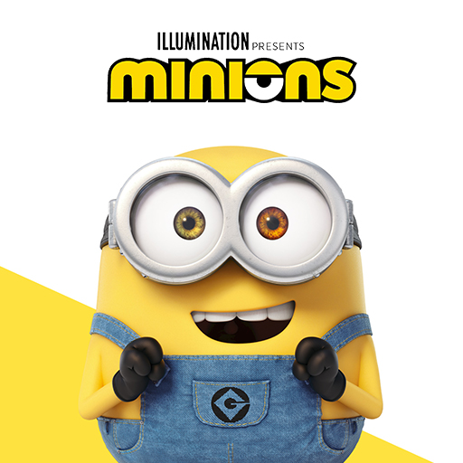

Minions adalah sebuah film komedi animasi komputer 3D Amerika Serikat yang tayang pada tahun 2015 dan merupakan prekuel/spin-off dari Despicable Me (2010) dan Despicable Me 2 (2013). Film tersebut diproduksi oleh Illumination Entertainment untuk Universal Pictures. Ditulis oleh Brian Lynch, film tersebut disutradarai oleh Pierre Coffin dan Kyle Balda, dan diproduksi oleh Chris Meledandri dan Janet Healy. Pada film tersebut diisi suara dengan 4 bahasa yaitu Italia, Spanyol, Inggris dan Indonesia. Film ini dibintangi oleh Pierre Coffin (sebagai Minions), Sandra Bullock, Jon Hamm, Michael Keaton, Allison Janney, Steve Coogan, dan Geoffrey Rush. Film ini ditayangkan perdana pada tanggal 11 Juni 2015 di London, dan telah dirilis di Amerika Serikat pada tanggal 10 Juli 2015. Di Indonesia dan Australia film ini dirilis pada tanggal 17 Juni 2015. Film ini pertama diramalkan di kredit penutupan dari Despicable Me 2, di mana Stuart, Kevin dan Bob tiga dari Minion, yang terlihat sedang mengikuti audisi untuk film ini.
